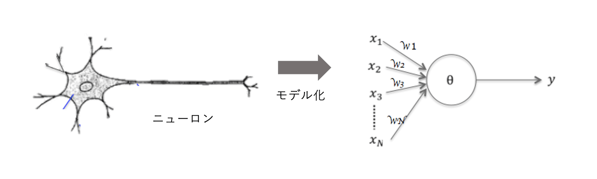

ニューラル・ネットワーク#
深層学習は、2010年代以降の人工知能ブームの立役者です。 深層学習を理解するため、ニューラルネットワークと基礎原理をしっかり理解しておきましょう。
ニューラル・ネットワークの原理#
ニューラル・ネットワーク(neural network)は、 人間の脳の構造を模した人工知能アルゴリズムです。
ニューロン#
人間の脳は、ニューロン(neuron)と呼ばれる神経細胞から構成されます。
ニューロンを単純化した数理モデルで考えます。

ネットワークの重み をとすると、
ニューロンから伝わる信号の総量 は
となります。
発火：次のニューロンに信号を伝える#
入力の信号量がある閾値（しきい値）を超えるかどうかで決めます。
発火
発火しない
単純パーセプトロン#
単純パーセプトロンは、ニューラルネットワークの単純な数理モデルです。
- 入力:
- 重み:
- バイアス:
- 活性化関数:
活性化関数は、ニューロンの発火を定める関数となります。 前の説明では、ニューロンの発火を0,1で決定していました。
それを関数として表すと、次のようなステップ関数となります。
ステップ関数
しかし、 ステップ関数は、発火しそうだけどギリギリ発火しないなどの中間的な状態が表現できません。 単純関数パーセプトロンでは、ステップ関数の代わりに、 ロジスティック回帰でも用いた標準シグモイド関数を使うことで、 0から1の連続値を扱えるようになります。 これで、0.49のようなギリギリ発火しない状態も表現できます。
標準シグモイド関数
誤り訂正学習法
ニューラルネットワークの学習は、 入力 に対し、出力を計算します。 出力が間違っていたら、重み を調整し、 正しい出力が得られるように近づけます。
確率モデルの導入#
シグモイド関数を用いると、確率的分類モデルになります。
発火する確率
発火しない確率
確率変数は、0か1なので、とおくと、 上記の二つの式は、次のように一つの式でまとめられます。
尤度関数(ゆうどかんすう） は、ある前提条件に従って結果が出現する場合に、 逆に観察結果からみて前提条件が「何々であった」と推測する尤もらしさ（もっともらしさ）を関数として表したものです。
尤度関数: とを尤度推定するための関数
なお、突然出てきたはデータの件数です。
ニューラルネットワークの学習#
ニューラル・ネットワークの学習は、 尤度関数を最大化するようにとを調整することになります。
最適化問題(optimization problem)
関数が最大・最小となる状態を求める問題のこと。 関数の最大化は、符号を反転すると、最小化に置き換えられるので、 一般に関数を最適化するとは、関数を最小化するパラメータを求めることです。
最適化問題となれば、パラメータの偏微分（勾配）を求め、勾配がになるパラメータを探します。 ただし、積の形をしているので、偏微分の計算が煩雑になります。そこで、事前の準備として、対数をとって、和の形に変形しておきます。
交差エントロピー誤差関数(cross-entropy error function)
を最小化することがもともとの尤度関数の最適化になります。 一般的には、のことを誤差関数(error function)、もしくは、損失関数(loss function)と呼びます。
勾配降下法#
交差エントロピー誤差関数を最適化するためには、で偏微分して0になるパラメータを求めることになります。しかし、解析的にこの値を求めるのは困難な場合があります。 そこで、パラメータを逐次的に更新することで、最適化を探索するアプローチがとられます。
勾配降下法(gradient descent)
(直感的な解釈)： 予測値と実際の値との誤差(y_n - t_n)を用いて、パラメータが更新されます。つまり、ニューラルネットワークの目標は、「予測値と実際の値」の差をなくすことなので、直感に反しない解釈となります。
学習率(learning_rate):
学習率は、収束しやすさを調整するハイパーパラメータです。 通常は、やなどの適当な小さい値を与えます。
ニューラル・ネットワークの数理をより深くみてみたい場合は、 次の参考資料も参考にしてみてください。
NumPyによる原理の確認⭐️⭐️#
NumPyを使って、単純パーセプトロンの原理を実装しながら確認していきましょう。
数式も理解するためには
少しPythonを使ってコーディングしてみると、理解が深まります。 (NumPyの練習にもなりますし。)
活性化関数#
まず、ニューロンの発火を表現する活性化関数として、 ステップ関数と標準シグモイド関数を比較してみましょう。
ステップ関数
def step(x):
return 1 if x > 0 else 0
step = np.frompyfunc(step, 1, 1) # ユニバーサル関数へ変換
x = np.arange(-10, 10, 0.1)
y = step(x)
plt.plot(x, y)
標準シグモイド関数
def sigmoid(x):
return 1 / (1 + np.exp(-x))
x = np.arange(-10, 10, 0.1)
y = sigmoid(x)
plt.plot(x, y)
勾配降下法#
勾配降下法(GD)は、 関数が与えられたとき、 を最小にするような(とも書く)を求める手法です。 最急降下法（Gradient descent, steepest descent）と呼ばれることもあります。
原理
- : 勾配
- : 学習率（ハイパーパラメータ）
1変数の場合
例として、次の簡単な放物線を考えることにします。
def f(x):
return 3 * x**4 - 4 * x**3 - 12 * x**2 + 24
def df(x):
return 12* x**3 - 12* x**2 - 24*x
def show_grad2():
x = np.linspace(-3, 4, 100)
y = f(x)
plt.figure(figsize=(6,5))
plt.plot(x, y)
show_grad2()
eta = 0.001 # 学習率
x = np.zeros(100)
x[0] = 4 # 初期値
for i in range(len(x)-1):
x[i+1] = x[i] - eta * df(x[i]) # 勾配降下法
show_grad2()
plt.scatter(x, f(x), c='red', alpha=0.5)
大域最適性と局所最適性
局所最適性とは、最適解のひとつであるが、必ずしも最小にならないこと。 （最小となる最適解を大域最適解 と呼ぶ。）
勾配降下法は、大域最小性は保証されません。例えば、上の例でも初期値をで始めると、局所最適解に収束してしまいます。学習率などを変更して、山を超えるように調整することもできます。 ただし、機械学習では調整するパラメータの数が多いので、多少、局所最適解になるパラメータがあっても、計算の効率が優先されます。
2変数の場合
from mpl_toolkits.mplot3d import Axes3D
def f(x, y):
z = x ** 2 + y ** 2
return z
def show_grads():
fig = plt.figure(figsize=(8,8))
ax1 = Axes3D(fig)
x = np.arange(-10, 11, 2)
y = np.arange(-10, 11, 2)
X, Y = np.meshgrid(x, y)
Z = f(X, Y)
ax1.set_xlabel('x')
ax1.set_ylabel('y')
ax1.set_zlabel('z')
ax1.plot_wireframe(X, Y, Z, label='f(x, y)')
return ax1
show_grads()
plt.show()
x = np.zeros(100)
y = np.zeros(100)
x[0] = -10 # 初期値
y[0] = 10 # 初期値
def dfdx(x):
return 2 * x
def dfdy(y):
return 2 * y
eta = 0.1 # 学習率
for i in range(len(x)-1):
x[i+1] = x[i] - eta * dfdx(x[i]) # 勾配降下法
y[i+1] = y[i] - eta * dfdy(y[i]) # 勾配降下法
ax1 = show_grads()
ax1.scatter3D(x, y, f(x, y), c='red', alpha=0.5)
plt.show()
勾配降下法(GD) Momentum
AdaGrad

wat氏のわかりやすい解説より引用
単純パーセプトロンの原理#
単純パーセプトロンの動作原理を確認していましょう。
サンプルデータ
| t | ||
|---|---|---|
| 0 | 0 | 0 |
| 0 | 1 | 1 |
| 1 | 0 | 1 |
| 1 | 1 | 1 |
入力(x)と出力(y)#
x = np.array([[0, 0], [0, 1], [1,0], [1,1]])
t = np.array([0, 1, 1, 1])
print('x.shape', x.shape)
print('t.shape', t.shape)
ニューロンの数理モデル#
次は、ニューロンのモデルを計算してみましょう。
今回の入力は、４回分の入力がに入っています。 これをバッチ処理として、一回で計算してしまいます。
学習モデル#
ニューラルネットワークは、誤差を少なくするようにパラメータ（重み）を調整することで、学習します。
は、ニューロンから予想された出力になります。ここから正解との差分を計算します。
勾配降下法で1ステップだけ進めてみましょう。
積の和をnp.matmul()を使って一度に計算しています。
eta = 0.1 # 学習率
print('BEFORE')
print('w =', w)
print('b =', b)
print('delta =', delta)
dw = np.matmul(x.T, delta)
db = delta.sum()
w = w - eta * dw
b = b - eta * db
print('w =', w)
print('b =', b)
エポック(epoch)#
何回か繰り返し計算することで誤差が小さく収束していきます。
x = np.array([[0, 0], [0, 1], [1,0], [1,1]])
t = np.array([0, 1, 1, 1])
np.random.seed(0) #乱数を固定
w = np.random.normal(size=(x.shape[1],)) # 初期の重み
b = 0
def forward(y):
return sigmoid(np.matmul(w, x.T) + b)
eta = 0.2
epoch = 100
yloss = []
for i in range(epoch):
y = forward(x)
delta = y - t
w = w - eta * np.matmul(x.T, delta)
b = b - eta * delta.sum()
loss = compute_loss(t, y)
if i % 5 == 1:
print(f'y[{i}]=', y, f'loss[{i}]', loss)
yloss.append(loss) # グラフ描画用
print(f'最終予測結果: ', y, 'loss:', loss)
print('正解: ', t)
print('w =', w, 'b =', b)
plt.plot(range(epoch), yloss)
多層パーセプトロンと深層学習#
単純パーセプトロンは、原理的にロジスティック回帰と等価です。 （実装で頑張っても）線形分離可能な問題しか解くことができません。
 一般化して、$n$ 次元空間上のふたつの集合を $n − 1$ 次元の超平面で
分離できることも線形分離可能と呼びます。
逆に、線形分離不可能な問題を線形分離不可能問題と呼びます。
一般化して、$n$ 次元空間上のふたつの集合を $n − 1$ 次元の超平面で
分離できることも線形分離可能と呼びます。
逆に、線形分離不可能な問題を線形分離不可能問題と呼びます。
線形分離不可能な問題#
線形分離不可能な問題は、日常的に存在します。例えば、論理回路のXOR回路も設計分離不可能です。
| t | ||
|---|---|---|
| 0 | 0 | 0 |
| 0 | 1 | 1 |
| 1 | 0 | 1 |
| 1 | 1 | 0 |
線形分離不可能な例
赤い部分が分離できていない。

多層パーセプトロン#
線形分離不可能な問題を解くためのアイディアは、パーセプトロンを組み合わせて多層化することです。
３層パーセプトロンの例

このように多層化することで、各ニューロンの学習結果が組み合わさって、 線形分離不可能な問題でも複数の分離線の組み合わせで分離可能になります。

さて、「多層パーセプトロンも実装してみましょう！」としたいところですが、 ちょっと１回の講義では多すぎる気がしますので重要な概念だけ紹介しておきます。

深層学習へ#
多層パーセプトロンは、４層以上の局所最適解や勾配消失などの技術的な問題によって、十分に学習させられず、性能も芳しくなく、1990年代は機械学習のメインストリームから外れていました。
深層学習は、2006年に、ジェフリー・ヒントンらがオートエンコーダを提案し、多層でも十分に学習できるように改善したニューラルネットワークです。
Nature誌に掲載されたDeep Learning の発明者らの論文
https://www.cs.toronto.edu/~hinton/absps/NatureDeepReview.pdf


コースワーク#
今回は、少々難解な数式が出て、コードも「とっ散らかった」感じになってしまいました。 このようなコードは、ライブラリとしてまとめておくと、再利用しやすくなります。